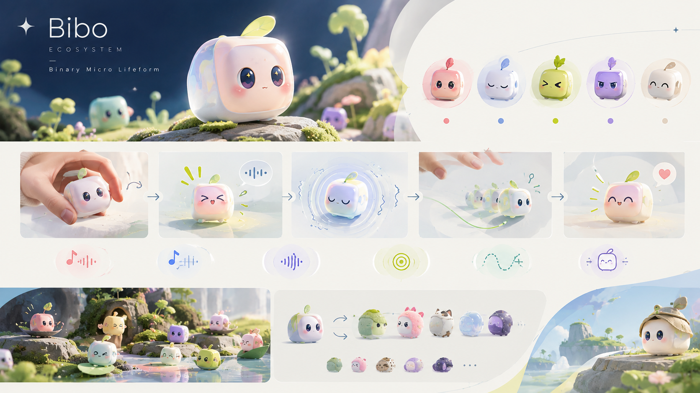
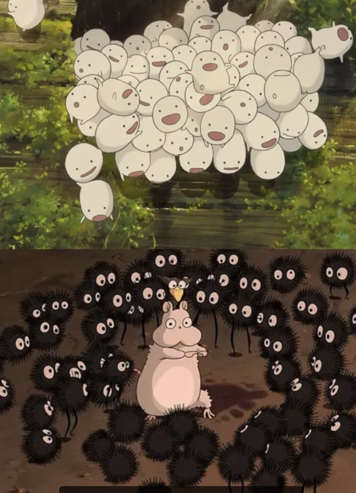
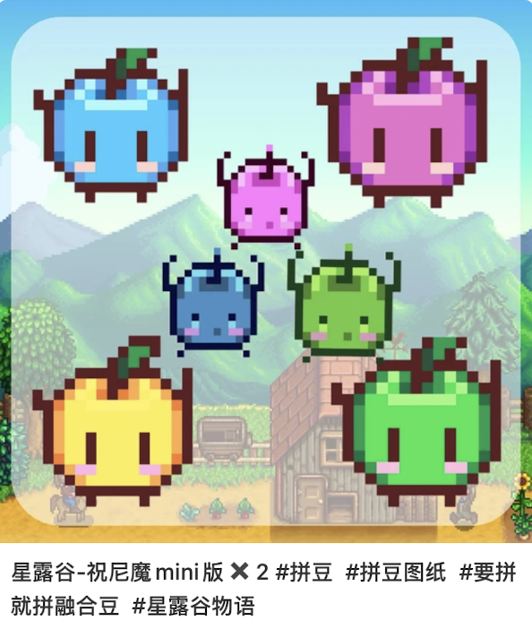
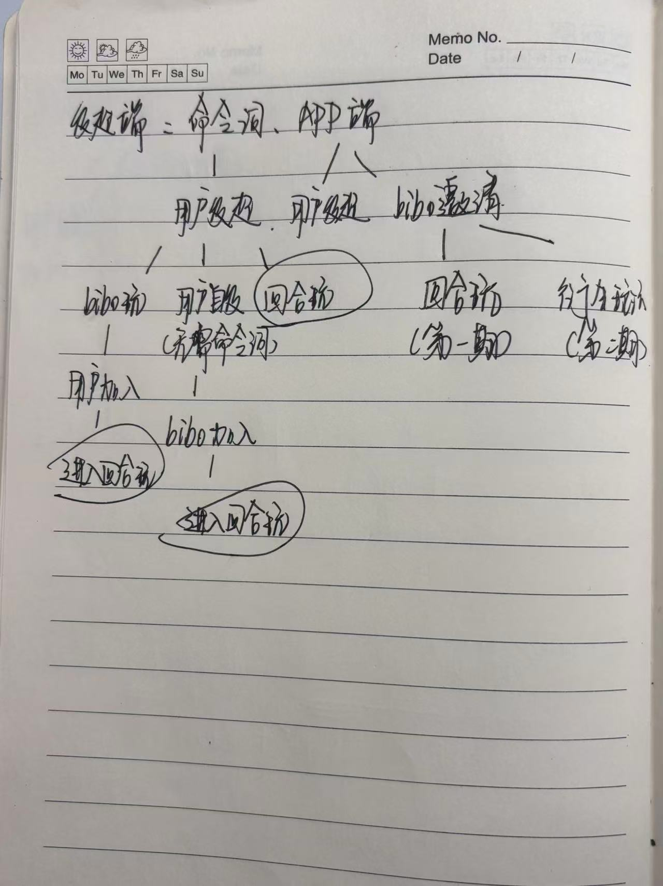
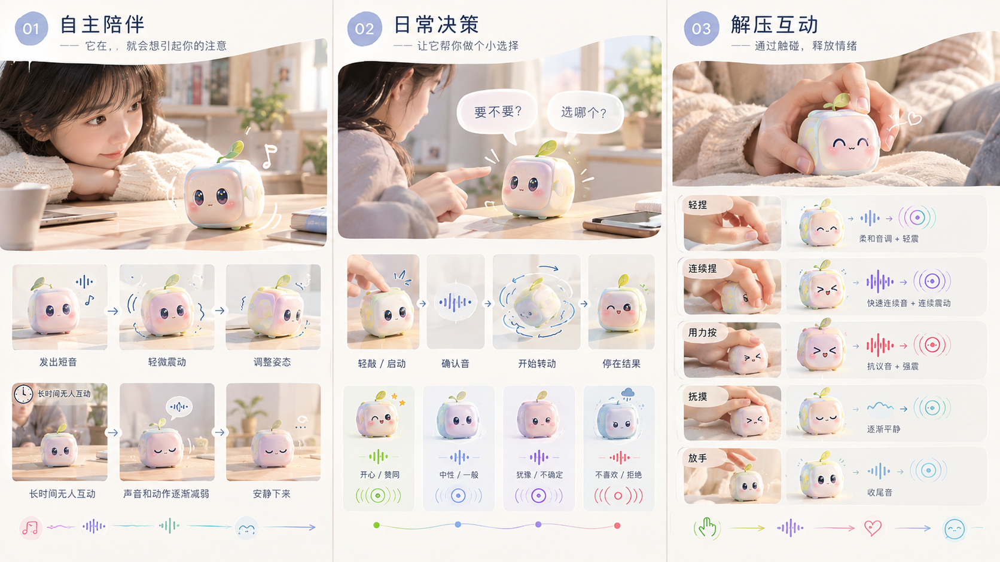
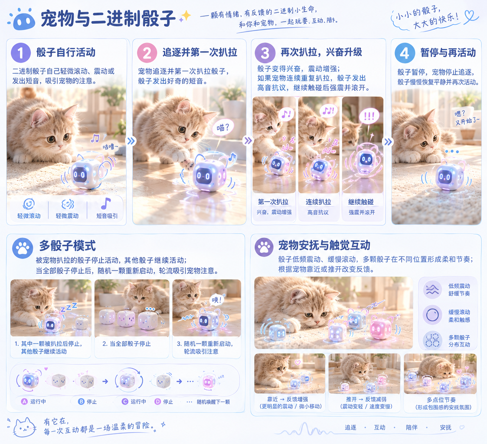
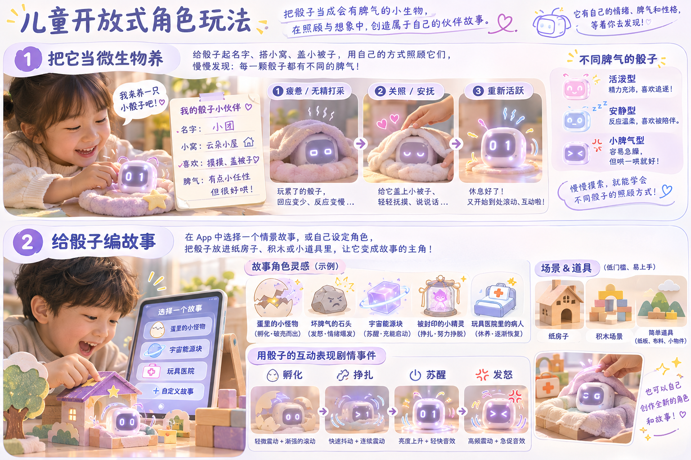
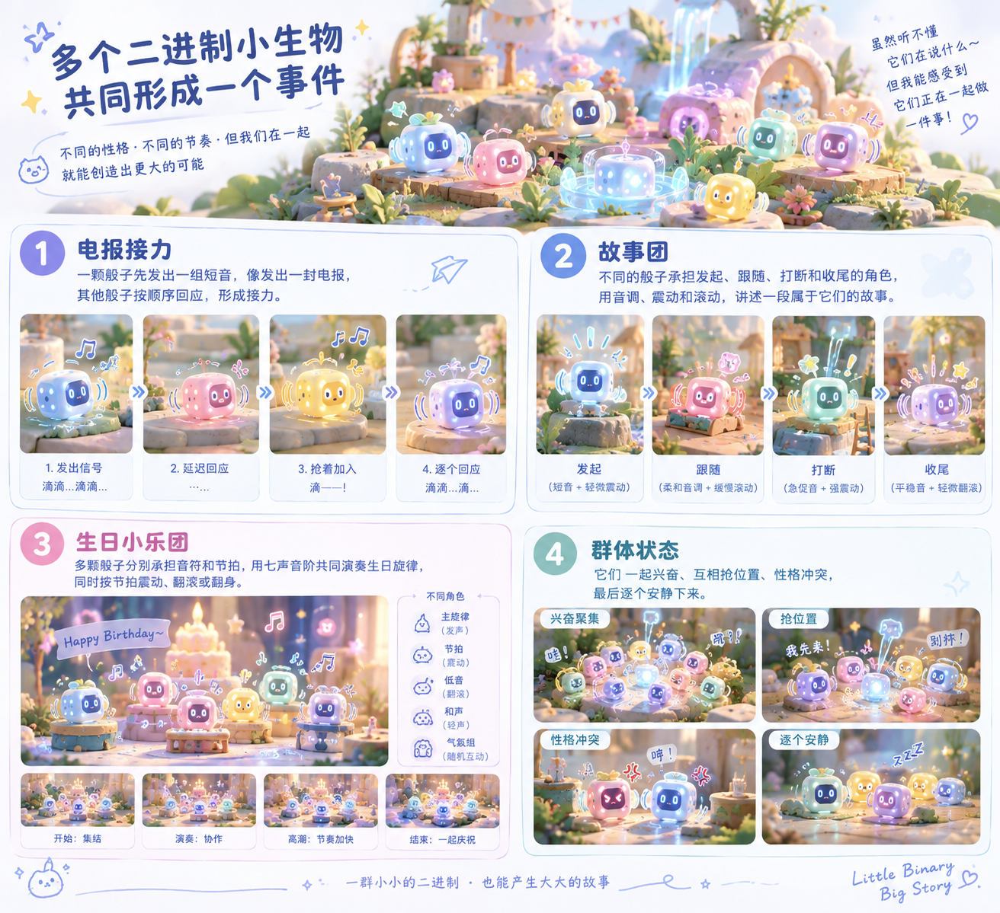

01去 Bibo 化玩法
二进制生命体
骰子从“产生数字的工具”变成 Bibo 生态里的微型生物。它的生命感来自感知、情绪、性格和近期互动，而不是来自复杂对话。
外界刺激→状态改变→按性格回应→继续互动
一个最小例子
同样被连续晃动三次：活泼骰子越来劲，胆小骰子短震后安静，暴躁骰子用急促震动抗议。

BIBO ECOSYSTEM / DICE LIFE FORMS
它们是 Bibo 生态里一群由简单规则组成的二进制小生物：会感知、会回应，会在扎堆之后形成自己的小社会。
向下查看项目结构01 / WORLD VIEW
二进制小生物不是脱离 Bibo 的另一套世界观，而是 Bibo 生态中自然出现的一类微型生物。Bibo 负责更复杂的关系和情绪，骰子负责把简单的感知和反馈扩展成群体。
Bibo 是更高阶的主角生物；骰子是可以被不断增加、组合和赋予新场景的微型生物节点。
骰子不需要完整自然语言，只要对动作作出稳定、带性格差异的反馈，用户就能理解“它有自己的脾气”。
单颗骰子是个体，多颗骰子是群体；它们可以竞争、合作、轮流回应，形成一个小社会。

灵感来自宫崎骏电影中成群出现、各自有动作和声音的微型生物，也来自角落生物式的陪伴感与群体性格。这里借鉴的是一种观察方式：单个个体很简单，但当它们扎堆、回应、追逐或一起安静下来，就会让人感觉一个小世界正在发生。
因此，骰子不需要说完整的话。它们可以用简单音阶、短音节、震动和滚动传递“电报”，让用户听不懂具体内容，却能感受到它们正在一起做某件事。具体角色、造型和行为将保持 Bibo 自己的原创设定。


02 / HIGHLIGHTS
骰子从“产生数字的工具”变成 Bibo 生态里的微型生物。它的生命感来自感知、情绪、性格和近期互动，而不是来自复杂对话。
同样被连续晃动三次：活泼骰子越来劲，胆小骰子短震后安静，暴躁骰子用急促震动抗议。
骰子提供随机结果和连续回合，Bibo 通过观察、输赢、等待、加入和退出，表现出它的状态与关系。
Bibo 连输两轮后叹气；用户在间隔中加入，Bibo 取消施法，等待用户掷完再继续自己的回合。

03 / PLAY MAP
下面的例子均来自现有玩法规划，重点不是展示功能数量，而是让每个互动对象都能用一句话理解。
以下按文档里的互动对象和玩法链路展开。每个例子都说明：怎么触发 → 骰子 / Bibo 怎么回应 → 形成什么体验。
骰子给出随机结果与互动过程，Bibo 在观察、输赢、等待和加入中表现性格。
不需要额外配件，仅靠 Bibo、骰子本体和基础交互，就能完成 Bibo 自己玩、用户加入、回合互动、观察结果和输赢反馈。所有表现继续区分 I 人 / E 人 Bibo。
在基础互动成立后，通过 Bibo、App 和情绪 / 游戏配件延展更具体的内容：把点数转成情绪签、卡牌探索、冥想解压、飞行棋等，进入“看见情绪—理解情绪—处理情绪”的关系过程。
触发 用户说“Bibo 自己玩”或在 App 点击开始。
过程 Bibo 进入施魔法 / 专注状态，骰子开始自动掷；每局间隔约 5 秒，Bibo 播放仍在游戏中的休息动画。
结果 本次局数在 2–6 局间变化；Bibo 根据点数及与上次结果的比较产生反馈：点数较低时失落，较高时开心。连续结果还可让情绪逐级变化，例如外向型 Bibo 连赢后从开心、愉悦吟唱到欢呼；结束后休息或邀请继续。
触发 Bibo 自己玩时，用户在两局间加入；也可直接从 App / 命令词选择回合玩。
过程 用户与 Bibo 轮流掷骰，系统记录每个点数是谁掷的、当前比分和剩余回合；用户掷骰时不启动电机，避免把马达误判成人的动作。用户中途停止时，Bibo 可叹气后回到自己玩，也可直接结束。
结果 Bibo 按人格和连胜 / 连败变化反应，App 显示比分；结束后可留下带性格的小记，例如“今天我输得好惨啊”。高胜 / 高负时也可有机会再次邀请。回合上限、冷却时间以续航和温升验证为准。
触发 用户在回合中拿起、甩动并掷出骰子。
过程 骰子上报用户动作等级与稳定点数；Bibo 暂停自己的动作，表现出好奇或惊讶，并等待结果。
结果 Bibo 根据点数、输赢和连续表现做出反应；同样是赢，外向型可以欢呼，内向型则低调开心。
一对一即时互动：骰子可以陪伴、做轻量决策，也能把触碰变成情绪反馈。
触发 骰子处于桌面伙伴 / 挂饰状态，暂时没有明确任务。
过程 它偶尔发出短音、轻微震动或调整姿态，试着吸引用户注意。
结果 用户回应后，互动继续；长时间无人理会时，骰子逐渐安静下来，形成“主动出现—等待—休眠”的陪伴节奏。
触发 用户敲骰子或在 App 进入决策模式，提出“要不要”“选哪个”等问题，并完成启动仪式。
过程 骰子先发出确认音，再转动。
结果 最终朝上的骰面代表结果；音调和震动表现它对这个结果的“态度”，让随机选择像一次有反馈的小仪式。若直接对骰子口述问题，需要手机 / Bibo / 底座转发，或增加骰内麦克风与识别能力。
现有硬件可验证 用户敲击或短暂摇晃骰子，再将它放回桌面。
过程 加速度传感器识别敲击、运动与静止；骰子用不同音调和震动回应，动作停止后逐步安静下来。识别阈值和反馈节奏仍需测试。
结果 先实现“动作触发—情绪化回应—平静收尾”的轻量解压体验。
后续扩展 轻捏、连续捏、用力按、抚摸等互动需要触摸或压力感知；现有硬件没有触摸传感器，需新增相应传感器并验证结构。
触发 用户玩过后表达“这个好玩”。
过程 手机 / Bibo 识别反馈并通过 BLE 转给骰子，或未来由骰子本地识别固定意图。
结果 骰子用连续多次震动回馈“我听见了”，让用户评价也进入双方互动。直接语音输入需要麦克风与指令识别链路。
触发 用户带着骰子外出，周围环境变得热闹。
过程 中心设备或骰内麦克风感知环境声音变化，并将“热闹”这一状态传给骰子。
结果 骰子以较明显的震动和短音节回应环境，像是和用户一起注意到周围。骰子原硬件没有麦克风，环境声感知属于新增能力。

宠物的追逐、扒拉和靠近，成为微型生物的外界刺激；重点是互动与安抚体验，不作治疗承诺。
触发 骰子开始活动，宠物追上来并扒拉。
过程 第一次扒拉，骰子好奇发声；第二次，兴奋震动；多次重复后，高音抗议；继续触碰时强震并滚开。
结果 形成“骰子活动 → 宠物追逐 → 扒拉 → 骰子回应或逃开 → 暂停 → 再次活动”的循环。
触发 多颗骰子一起进入宠物互动模式。
过程 被扒拉的骰子停止运动，未被扒拉的继续活动；全部停下后，随机一颗重新启动。
结果 多颗骰子轮流吸引宠物注意，形成群体追逐节奏，而不是每颗同时乱动。
触发 骰子放在宠物身边，宠物靠近、贴近或推开。
过程 骰子以低频震动、缓慢滚动回应；多颗骰子可以在不同位置形成不同节奏，并根据宠物靠近或推开改变反馈。
结果 让宠物获得有情绪的触觉互动体验。文档定位为“宠物安抚与触觉互动”，不宣称治疗或穴位按摩。

从单颗生命体扩展到群体行为：用户可以指定谁参与，也可以让它们自主选择角色。
触发 多颗骰子进入同一群体场景。
过程 它们可以追逐、竞争、合作、结盟、躲避、抢占位置；过程可以被安排成有先后、有角色差异的行为。
结果 玩累后逐个安静下来。用户可指定参与的骰子，也可以让骰子自主选择角色，观察一个小社会如何形成。
触发 骰子靠近、拼接或磁吸在一起。
过程 两颗拼接发确认音；三颗形成固定节奏；特定组合解锁场景旋律。性格相合会出现和谐音型，性格冲突则震动、排斥或滚开。
结果 长时间拼接后进入休息或合唱状态，桌面摆件由静态陈列变成可触发的群体关系。
触发 选择一组骰子进入合唱团或故事团情景。
过程 多颗骰子按顺序组合光效、声音和震动频率：可以轮流发出短音，也可以按预设节奏接力。
结果 单颗骰子的简单表达被组合成一段集体表演或情景回应。靠近 / 拼接检测和角色同步需要结构及固件验证。
不只做教育桌游：骰子可以是孩子照顾的小生物，也可以成为过家家和故事事件里的角色。
触发 孩子给骰子起名字、做窝、盖小被子。
过程 通过特定敲击“喂食”或“哄睡”；不同性格的骰子会有不同回应。骰子累了会减少回应，休息后恢复活跃。
结果 孩子逐渐学会每只小生物不同的脾气和照顾方式，形成持续的照料关系。这一方向被文档列为最贴近现有硬件的儿童玩法。
触发 在 App 里选择内置情景故事，或自主设定骰子的角色；例如把一颗骰子想象成“蛋里的小怪物”。
过程 翻动、震动、光效和音调变化共同表现剧情事件：孵化、挣扎、苏醒、发怒。
结果 故事完成后，个体或群体骰子用回应、合唱或排列组合互动作为奖励。核心乐趣是孩子自己赋予骰子意义。
可选角色 文档中的故事设定还包括：坏脾气的石头、宇宙能源块、被封印的小精灵、玩具医院里的病人。
可用道具 外皮、纸房子和简单道具帮助孩子搭建场景；开放式角色玩具的硬件重点是外皮与道具，不是继续堆电子功能。
结果 同一颗骰子换一个故事身份，就能进入新的过家家剧情。

多个骰子作为二进制生命体，不只是同时工作，而是通过简单的音阶、音节、震动和滚动，表现出自己的性格，并共同形成一个“事件”。
一个骰子发出“电报”，其他骰子接二连三响应；活泼的会抢着加入，胆小的会延迟回应，冲突的会排斥或滚开。它们的“群体性”不依赖完整语言，而依赖重复出现的行为关系。
一颗骰子先发出短音或一组节奏，其他骰子按先后接力回应，像小生物在传递一条听不懂但有秩序的消息。
几颗骰子各自承担一个角色：一个发起、一个跟随、一个打断、一个收尾；通过音调和震动把一段故事演出来。
中心设备分配音符和节拍，多颗骰子同步演奏《生日快乐》，再按节拍震动、翻滚或翻身。
它们可以一起兴奋、争抢位置、逐个安静，或在性格相合时形成和谐音型；用户感受到的是“它们正在一起做事”。

拿起、翻转、晃动、敲击、掷骰、App / Bibo 指令、其他骰子或宠物刺激
动作特征 + 当前情绪 + 稳定性格 + 互动历史 + 随机机制
震动、滚动、简单音节、PWM 七音阶、灯光、骰面结果与群体同步
04 / HARDWARE BASE
现有硬件先保证“感知动作、产生结果、表达反馈”；新增的声音和群体能力，再逐步把骰子从可控硬件推向可互动生命体。
拿起、翻转、晃动、掷出和结果稳定等动作，是当前硬件能支撑的主要交互输入。
采用无源压电蜂鸣器和 MCU PWM 播放 Do、Re、Mi、Fa、Sol、La、Si 七音阶，用音高、节奏和重复表达情绪。
如果用户要直接对骰子说固定指令，需要增加麦克风和本地识别链路；也可以先由手机、Bibo 或底座听懂，再通过 BLE 下发。
蜂鸣器、可选灯光和新的主控都会影响重量分布、峰值电流、续航和自动掷骰的公平性。